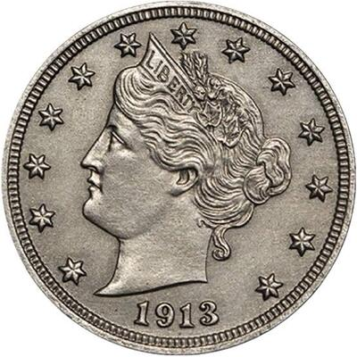
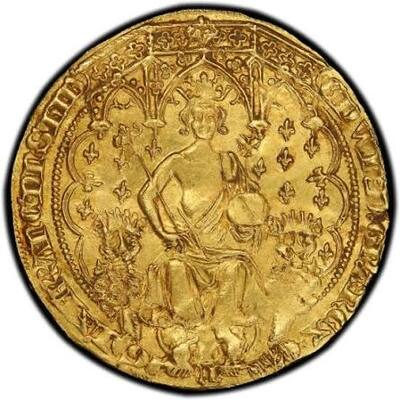
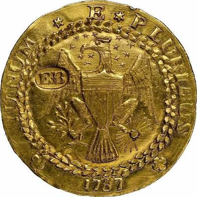
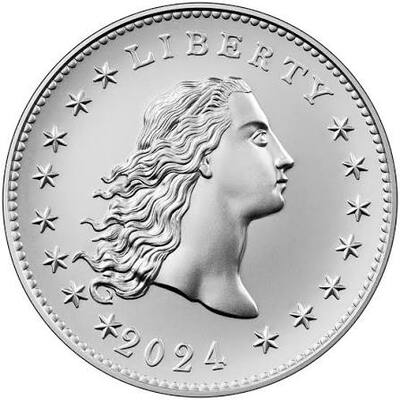
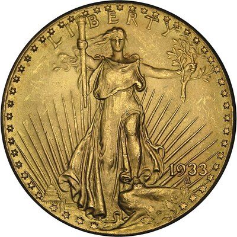

1913Liberty Head V Nickel
Uma das moedas de 5 centavos mais raras dos EUA. Existem apenas 5 exemplares conhecidos no mundo.
Explore algumas das moedas mais valiosas, históricas e fascinantes já cunhadas na história da humanidade.

1913Uma das moedas de 5 centavos mais raras dos EUA. Existem apenas 5 exemplares conhecidos no mundo.

1344Raríssima moeda de ouro medieval inglesa. Apenas três exemplares foram descobertos até hoje.

1787Cunhada pelo ourives Ephraim Brasher nos primeiros anos dos Estados Unidos. É avaliada em milhões de dólares.

1794Considerada o primeiro dólar de prata emitido pelo governo federal dos Estados Unidos.

1933Moeda de ouro americana de 20 dólares que quase foi totalmente derretida, tornando-se um tesouro proibido.